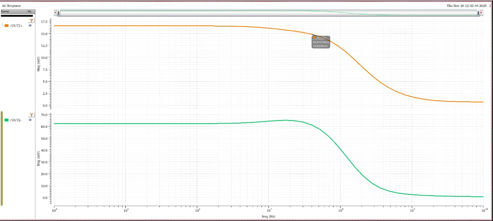
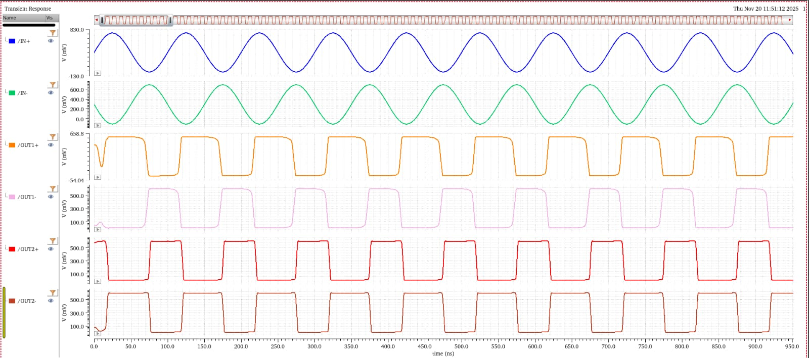
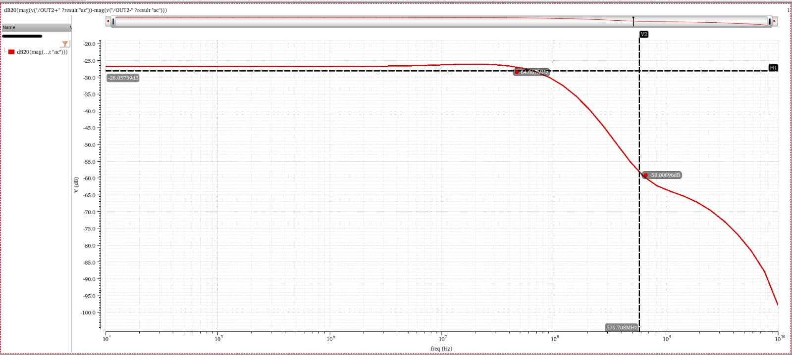

Inverter-Based OTA & Gm-C Filter

Project Description
Designed and implemented an inverter-based Operational Transconductance Amplifier (OTA) and Gm-C low-pass filter using Cadence Virtuoso. The project focused on achieving low-power analog circuit design while maintaining good gain and frequency response characteristics. The OTA was designed using CMOS technology and integrated into a Gm-C filter architecture for signal processing applications. Simulation and verification were performed using Cadence tools to analyze gain, bandwidth, frequency response and power consumption.
Tools Used
Cadence Virtuoso
Analog VLSI
CMOS Design
Gm-C Filter
Circuit Simulation
Linux Environment
Project Images


